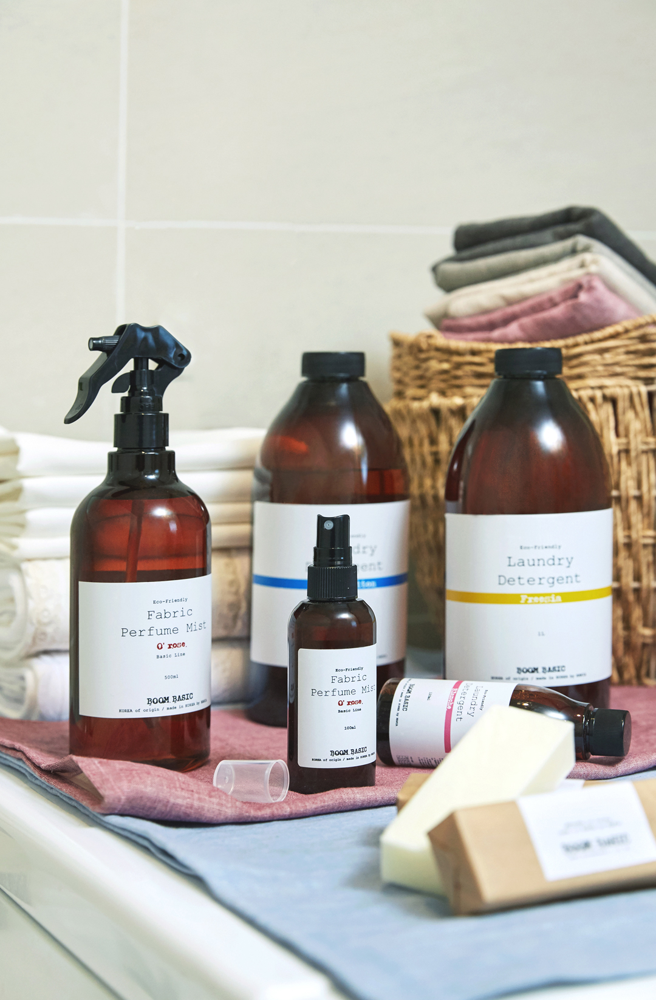
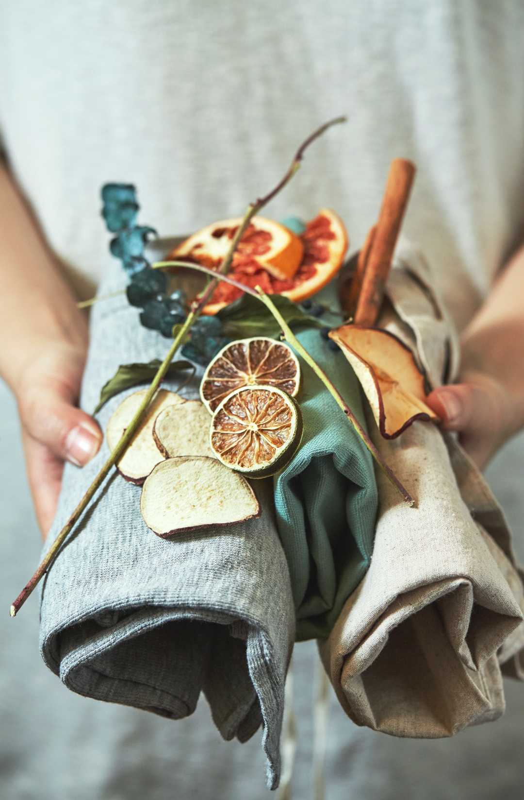

-
mom
labal -
BOOM BASIC붐베이직
#압구정로데오#붐베이직#압구정쇼룸#라이프스타일#홈데코#orgarnic#boombasic
생활 속의 편안함, 프리미엄 오가닉 라이프 즐기기
#Road3 ‘ 붐베이직(BOOM BASIC) ’ 압구정로데오의 거리를 걷다가 보이는 하얀 집과 같은 건물이 눈길을 사로잡는다. 발을 들어서자 한 낮의 기분을 refresh 시켜주듯이 은은한 향들이 코 끝을 맴돈다. 그 향기에 이끌리듯 들어가면 마치 집에 들어온 듯한 포근한 느낌을 준다. orgarnic에 대한 관심은 여전히 계속 되고 있다. 우리의 일상 곳곳 가까이에 있는 물건의 성분에 대해서 생각하는 사람들이 많아지고 있음에 따라 유기농 관련 제품들도 인기를 끌고 있다. 오늘 소개할 프리미엄 오가닉 라이프를 지향하는 ‘붐베이직‘에서도 천연성분으로 만든 다양한 제품들을 선보이고 있었다.
- 
- 
우리의 몸에 평소 가장 가까이에 닿는 것은 아마 옷일 것이다. 식물성 성분으로 만든 붐베이직의 세탁세제는 생분해도가 우수하여 수질오염도 줄여주는 친환경 제품이다. 우리의 생활 속을 채우고 있는 것들에 대한 섬세함을 느낄 수 있다. 이외에도 유해성분이 없는 자연의 천연재료를 사용한 소이캔들, 디퓨저, 세탁세제와 세안비누 등 일상에서 사용하는 다양한 제품이 마련되어 있다. 인공적인 요소를 최대한 배제해 만든 에코 프렌들리 핸드메이드 제품들이다. 인공 향과 화학 가죽을 사용하지 않고 식물성 원재료와 인체에 무해한 자연의 원재료 그대로 만들어 정성이 묻어나는 제품들로 쇼룸을 가득 채우고 있다.


공간을 채워주는 제품들은 단순히 아로마 제품의 기능만 가진 것은 아니다. 집안 곳곳에 자리잡아 그 자체만으로도 인테리어 소품이 되기도 한다. 특히, 디퓨저와 캔들은 모던하면서 심플한 디자인으로 공병을 활용해 꽃을 꽂아 화병으로도 사용해 또 하나의 인테리어가 되기도 한다. 이곳의 디퓨저와 캔들 등 전문 조향사가 자체 연구해 가장 이상적인 조합을 거쳐 직접 핸드메이드로 매장에서 만들고 있다.
매장에서 풍기는 향기는 안정과 위안을 선물 받는 느낌을 준다. 마치 집이라는 편안한 공간 속, 작은 자연 안에서 건강한 휴식을 하고 있는 것만 같다. 캐나다의 자연 환경과 가족이 중심이 된 라이프를 경험한 오영란 대표의 철학이 담겨 있는 제품들로 가득한 곳이다. 우리의 살갗과 일상이 만나는 가까운 지점에서부터 건강과 행복이 시작된다. 나와 가족 모두에게 생활 속의 편안함을 선사해보자.
- 서울특별시 강남구 압구정로 46길 34
- 월요일-일요일 오전 11시부터 오후 8시까지
- 02-547-5104
- www.boombasic.co.kr
| Editor. D